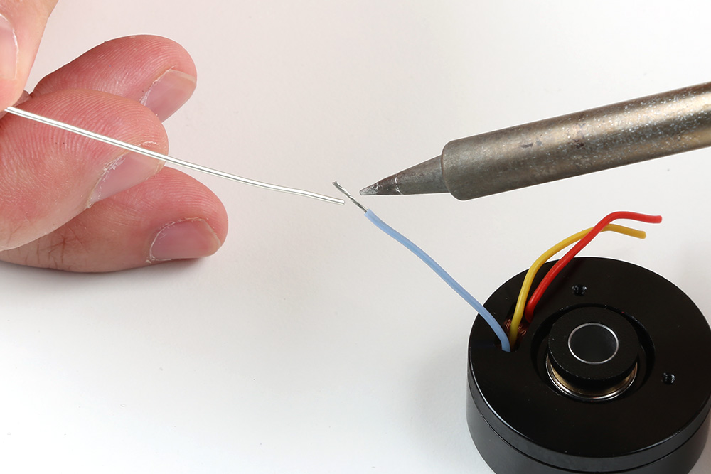
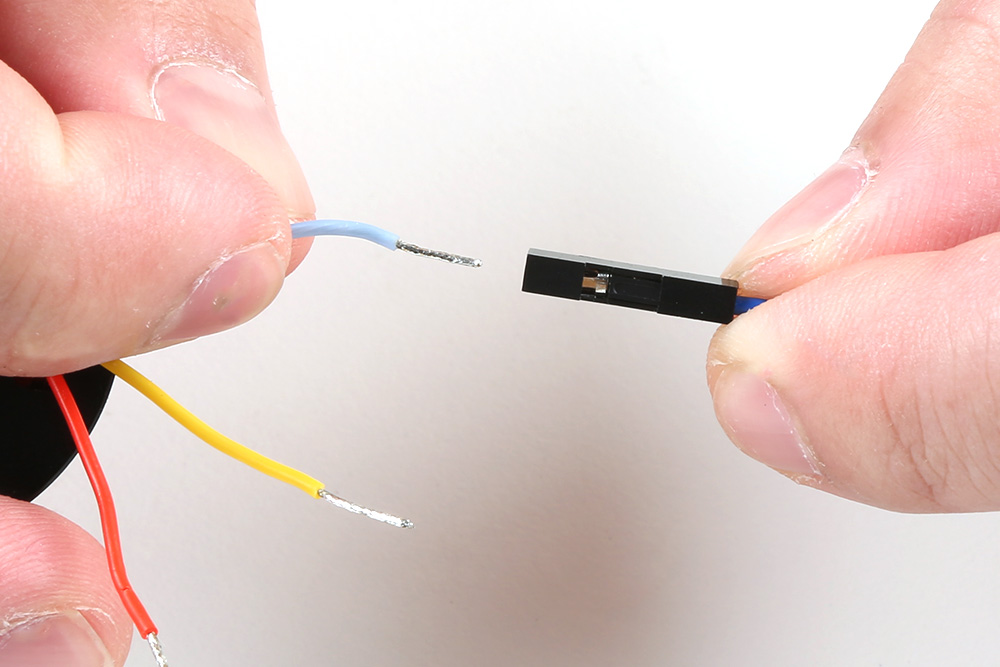

Hardware Overview
Board Dimensions
The board dimensions are illustrated in the drawing below; the listed measurements are in inches.

Board dimensions (PDF) for the TMC6300 motor driver breakout board, in inches.
Need more measurements?
For more information about the board's dimensions, users can download the eagle files for the board. These files can be opened in Eagle and additional measurements can be made with the dimensions tool.
Eagle - Free Download!
Eagle is a CAD program for electronics that is free to use for hobbyists and students. However, it does require an account registration to utilize the software.
 Dimensions Tool
Dimensions Tool
This video from Autodesk demonstrates how to utilize the dimensions tool in Eagle, to include additional measurements:

Power
Users are provided with PTH to connect their external power supply, I/O logic-level voltage, and the regulated 1.8V output. The TMC6300 motor driver has an input voltage range of 2.0V to 11.0V.

The power connections on the TMC6300 motor driver.
Below, is a general summary of the circuitry on the board:
VIN- Power supply input- Range: 2 to 11V
VIO- I/O supply voltage- Range: 1.8 to 5.25V
NSTDBY- IC goes to standby mode and resets when this pin is pulled toGND
VCP- Charge pump voltageGND- The common ground or the 0V reference for the board
Info
For more details, users can reference the schematic and the TMC6300 datasheets.
Motor Voltage
Even though the input voltage range for the motor driver goes down to 2V, users will need to provide the minimum operating voltage for their motor. Our Gimbal Stabilizer Motor has an operating voltage range of 6 - 8V.
Power LED
The red, power (PWR) LED will light up when a power supply is connected to the board. However, the LED can be disabled for low-power applications by cutting the jumper.

The PWR status LED indicator for the TMC6300 motor driver.
VIO/Standby Pin
In it's default configuration, the VIO pin is used to enable the motor driver and set the logic level voltage (1.8 to 5.25V) for the I/O pins. However, the VIO pin also operates as a standby pin when it is pulled LOW. In standby, the TMC6300 resets and sits in standby mode.

VIO pin on the TMC6300 motor driver.
VCP Pin
The VCP pin is broken out for users to include an external charge pump capacitor. Adding an external capacitor would help stabilize the supply voltage, from the large voltage swings (dV/dt) of the motor driver's operation. A 1nF to 100nF capacitor rated at 10V, is recommended by the datasheet.
VCP pin on the TMC6300 motor driver.
TMC6300
The TMC6300 from Trinamic Motion Control, part of Analog Devices, is a low voltage, 3-Phase BLDC/PMSM motor driver utilizing separate high-side and low-side control signals for its three half-bridges.
|
Features:
|
 TMC6300 chip on the TMC6300 motor driver. |
Info
For more details, please refer to the TMC6300 datasheet and application note.
Chip Protections
The TMC6300 features the overtemperature and short protections:
- The overtemperature protection feature implements a two temperature thresholds; however, the datasheet warns users that this should only be relied on as an emergency percaution and may not prevent the destruction of the IC. This is due to several factors including that excess heat can generate quickly before the overtemperature sensor can react. Therefore, users should prevent this situation from occuring by design with methods such as adequate heat dissipation.
- The short protection feature gaurds the motor commutation channels by monitoring the current flowing through each of the power stage MOSFETs. Once a short condition (short to
GNDorVS) is safely detected, all driver bridges become switched off, and theDIAGoutput becomes set. In order to restart the motor, the users must must disable and restart the TMC6300. As with the overtemperature protection, the datasheet warns users that this feature should only be relied on as an emergency percaution and may not prevent the destruction of the IC or detect all possible short events.
By monitoring the current draw through the SEN pin, users can also implement an over current protection scheme in their software. This can also aid in preventing a trigger in the overtemperature protection and validating a short detection.
Maximum Load Current
When pushing the maximum load current of 2A, users should monitor the current draw through the SEN pin and add a heat sink to provide additional heat dissipation. This should precautions can help to avoid damaging the IC.
Motor Commutation
The TMC6300 relies on an electrical commutation sequence/signal to drive the motor phases to a BLDC or PMSM motor. The commutation signals for these motors are trapezoidal for BLDC motors and sinusoidal for PMSM motors.

For a trapezoidal signal, the high-side (HS) and low-side (LS) MOSFETs, can just be driven high or low. However, in order to approximate a sinusoidal signal, a progressively varying PWM signal must be provided from the microcontroller and all six signal should be in sync with each other.

Sinusoidal PWM signal.
(Source: Demystifying BLDC motor commutation: Trap, Sine, & FOC)
PMSM vs BLDC Motor
A BLDC motor (sometimes referred to as a BLDM) and a PMSM (sometimes referred to as an AC synchronus motor) for the most part will appear the same in their internal construction. The difference between these types of motors is in their stator windings. This means that their commutation (the electrical signals used to drive the motor) is different.
- In a BLDC motor, the windings are concentrated on salient poles, requiring a voltage waveform that's more trapeziodal than sinusoidal.
- In a PMSM, the windings are distributed over several poles, requiring a voltage waveform that's more more sinusoidal.
Gimbal Motor
Based on measuring the output from one of the coils, our gimbal motor is a PMSM and would require a sinusoidal waveform to drive the motor. It should be noted that a trapezodial waveform can probably be used; however, users may notice effects such as cogging.
Alternative Use Cases
While this IC is intended to be used to drive 3-Phase BLDC/PMSM motors, users can easily adapt their hardware and software to work with other moters. For example, users could use two half-bridges to form an H-bridge and adapt their control software to drive a brushed, DC motor.
I/O Pins
There are several I/O pins for the TMC6300. Some of the pins are detailed in the power section above; the VOUT pin is ommitted because it isn't broken out.
Half-Bridges
The TMC6300 features high-side and low-side MOSFET pairs of the three available half-bridges which control the commutation of the three motor phases.
6 PWM control of a 3-phase motor commutation.
(Source: Modified from the Block commutation vs. FOC in power tool motor control application note)
The electronic commutation sequence of these pins will depend on the motor that is connected. For most cases, users will provide a PWM signal to each of the pins. These are active-high pins with logic levels controlled by the VIO pin.
UL/UH, VL/VH, and WL/WH) for the three half-bridges of the TMC6300 motor driver.
Active High
By pulling the pin high, the MOSFET will enable power to flow through that section of the half-bridge.
Microcontroller Limitations
Users will need to use pins capable of providing a PWM signal. In addition, for the recommended Simple FOC Arduino library, users will also need to consider the supported microcontroller as well as the configuration for the 6PWM mode.
With the electronic commutation sequence provided to the half-bridges, the output motor phases will drive a connected motor.

U/V/W) from the TMC6300, used to drive a motor.
Wiring Sequence
For a 3-phase brushless motor, the connection sequence of the wires to a BLDC motor doesn't necessarily matter; the direction that the motor spins can be controlled through the software. However, for reference, switching two of the output channels to the motor will automatically reverse the direction that the motor was spinning.
- If users swap the
UandVconnections, but leave theWconnection alone, the motor will now spin in the opposite direction of the original configuration.
Diagnostic Pin
The diagnostic pin is triggered based on different faults (i.e. shorts and overtemperature) detected by the IC. By default, the status will be indicated by the, green diagnostic, D LED and will remail LOW until triggered. Once triggered, users will need to disable and reset the TMC6300 or power cycle the board.
The DIAG pin on the TMC6300 motor driver.
Users can also monitor the DIAG pin, so their microcontroller knows when to reset the TMC6300 to clear the fault.
Current Sense Pin
The current sense pin is the foot point of the U and V half-bridges, with a 0.12Ω resistor attached. Users can measure the voltage across the SENSE and GND pins to determine the current flowing to the motor; however, it is recommended that an op-amp be attached to amplify the signal.
The SEN pin on the TMC6300 motor driver.
LEDs
There are three status indicator LEDs on the TMC6300 motor driver:
V- Power (Red)- Turns on once power is supplies to the
VINpin
- Turns on once power is supplies to the
D- Diagnostics (Green)- Turns on to indicate a fault (see diagnostic pin section)
S- Standby (Blue)- Turns on when the motor driver is enabled
- Turns off, when the IC has been reset and the motor driver is in standby mode
The status indicator LEDs on the TMC6300 motor driver.
Heat Sink Pad
A 0.13" x 0.14" platted copper pad is provided on the top of the board, where users can add a heat sink to dissipate excess heat generated by the TMC6300. The pad can accommodate the small heatsink in our catalog.
Thermal Shutdown Temperature
The AP329A has a 160°C (320°F) thermal shutdown temperature. The TMC6300 will restart automatically when the junction temperature decreases to +130¬∞C.
Copper Heat Sink
Users may be tempted to use our copper heatsink on their board. However, we highly advise against using the copper heatsink because it barely fits and will likely cause a short across one of the pins.


Heat sink pad on the top of the TMC6300 motor driver.
Jumpers
Never modified a jumper before?
Check out our Jumper Pads and PCB Traces tutorial for a quick introduction!

There are three jumpers on the back of the board that can be used to easily modify a hardware connections on the board.
- V - This jumper can be used to remove power from the red, power LED.
- S - This jumper can be used to remove power from the blue, standby LED.
- D - This jumper can be used to remove power from the green, diagnostic LED.
The LED jumpers on the back of the TMC6300 motor driver.
Hardware Assembly
TMC6300 Motor Driver
Headers
New to soldering?
If you have never soldered before or need a quick refresher, check out our How to Solder: Through-Hole Soldering guide.

The pins on the SparkFun TMC6300 motor driver are broken out to 0.1"-spaced pins on the outer edges of the board. When selecting headers, be sure you are aware of the functionality and board orientation required.
Soldering headers to the TMC6300 motor driver.
Tip
Please be aware that the side of the board with the silkscreen labeld for the pins and the heat sink pad is, technically the top side of the board when in use.
Staggered PTH Pins
The pins on the board may appear to be offset or crooked; this is by design, we stagger the holes along a specific center alignment. This reduces the geometric tolerance between the holes and header pins along a single axis, which helps to hold the header in place and keeps the pins more orthogonal to the board when soldering.
Heat Sink
Tip
With larger heat sinks, we recommend a test fit and attaching it last to avoid conflicts with other parts of the board. For example, the heat sink could block the PTH pins/slots or access to the jumper pad.
Copper Heat Sink
Users may be tempted to use our copper heatsink on their board. However, we highly advise against using the copper heat sink because it barely fits and will likely cause a short across one of the pins.
 Different heat sinks next to the TMC6300 motor driver. |
Copper heat sink not fitting on the TMC6300 motor driver. |
To attach a heat sink to the board, users will also need a piece of thermal tape. We recommend the following procedure:
-
Cut out a piece of thermal tape to fit the bottom of the heat sink.
Tip
Covering the entire bottom of the heat sink can insulate the electrical contacts on the board from shorting.
- For a perfect fit, users can place the heat sink over the tape and trace the outline to cut with scissors.
- For a perfect fit, users can also place the heat sink over the tape and cut the outline with a hobby knife.

Cutting the thermal tape to fit the heat sink. -
Place the piece of thermal tape on the bottom of the heat sink.
Tip
We recommend peeling off just one side of the backing sheet or release liner to place the thermal tape on the heat sink. Users can then peel the other side off when they are ready to place the heat sink on their board.
-
Attach the heat sink to the board.
- Make sure to make any jumper modifications and/or solder any connections before placing the heat sink on the board.
- Make sure to avoid any electrical contact with the sides of the heat sink.

Heat sink attached to the TMC6300 motor driver.
BLDC Gimbal Motor
Advanced Skills Required
To connect the gimbal motor to the TMC6300 motor driver board, some advanced soldering and wire stripping skills are necessary. The wire leads from the motor are only about 2" long, which is not a lot to work with. Users may only have two attempts at stripping the wires before they run out the available wire length.
New to soldering?
If you have never soldered before or need a quick refresher, check out our How to Solder: Through-Hole Soldering guide.
To connect the gimbal motor to the TMC6300 motor driver, users will need to expose the wiring. First, remove the JST connector and make sure to cut as close to the plastic housing as possible.
Cut off the plastic JST connector on the motor's wire leads.
Alternative Connections
If users are utilize the alligator or IC hook pigtails, they may be able to crack the plastic housing of the connector to expose the crimped wire terminals.
Next, with as much care as possible, strip off some of the electrical insulation of each of the leads. On our wire strippers, the 26AWG notch worked the best.

Strip off some of the insulation from the motor's wire leads.
The last step is to twist and tin the wires, so that they can be inserted into some jumper wires. Make sure to keep the ends straight and avoid adding to much solder, so that the wire ends can still fit into the female jumper wire terminals.
|
 Twist and tin the exposed wire leads, so that they can be inserted into the female end of a jumper wire. |
 The leads should be straight and clear of bulges fit the into female terminals. |
Assembly for Examples
The following instructions are for wiring up the RedBoard Plus, TMC6300 motor driver, and motor for the examples provided in this tutorial.
RedBoard Plus to TMC6300
For ease of use, connect the TMC6300 motor driver with headers attached to the center of breadboard. The pin layout should perfectly align, so that users will have three breadboard pins available on each side of the TMC6300 breakout board. Then, following the table below, connect the pins from the RedBoard Plus to breadboard pins associated with the motor driver.
| RedBoard | 3 |
5 |
6 |
9 |
10 |
11 |
12 |
GND |
|---|---|---|---|---|---|---|---|---|
| Motor Driver | UL |
WL |
WH |
VL |
VH |
UH |
VIO |
GND |

A graphical representation of the connections between the RedBoard Plus and a breadboard with the TMC6300 motor driver attached.
Timer Pins
As mentioned in the Simple FOC library documentation,
Arduino UNO support
Arduino UNO and all the atmega328 based boards have only 6 PWM pins and in order to use the
BLDCDrievr6PWMwe need to use all of them. Those are3,5,6,9,10and11. Furthermore in order for the algorithm to work well we need to use the PWM pins that belong to the same timer for each high/low side pair of each phase. So Atmega328 pins belonging to the timers are:
TIM0TIM1TIM25,69,103,11Therefore it is important that
phA_handphA_lbelong to one timer,phB_handphB_lto second timer andphC_handphC_lto the last timer. If we decide that phaseAbelongs to the timerTIM0we can setphA_heither to pin5or pin6.
Motor to TMC6300
Connecting a motor to the TMC6300 motor driver straight forward. Users, just need to connect the half-bridge drive channels with the ends of the motor's stator coils.
- Utilizing two half-bridges to drive a brushed DC motor with a full H-bridge
- Utilizing three half-bridges to drive a brushless DC motor
BLDC Gimbal Motor
Connecting a 3-phase, BLDC motor to the motor driver is relatively simple as the sequence of the wires connection doesn't matter. Using jumper wires, connect the prepared ends of the gimbal stabilizer motor to the U, V, and W pins of the TMC6300 breakout board.
A prepared end of the gimbal motor being inserted into the female terminals of a jumper wire.
Tip
Users may want to prop up the base of the gimbal motor, as the magnetic end of the motor shaft protudes below its base plate. Users can see a demonstration in the video below:
Reversing the Rotation of the Motor
For a 3-phase brushless motor, the connection sequence of the wires to a BLDC motor doesn't necessarily matter; the direction that the motor spins can be controlled through the software. However, for reference, switching two of the output channels to the motor will automatically reverse the direction that the motor was spinning.
- If users swap just the
UandVconnections, leaving theWconnection alone, the motor will now spin in the opposite direction of the original configuration.
DC Hobby Motor
If this was a H-bridge motor driver, the connections to the motor wouldn't matter. However, as there are three half-bridges, users will need to note which half-bridges the DC motor is connected to. These connections will dictate how the motor is driven by the software. For the example, connect the motor to the V and W output channels of the TMC6300 motor driver.
Reversing the Rotation of the Motor
For a single phase DC motor, the direction that the motor spins can be controlled through the software. However, for reference, switching the polarity of the motor's wires will also reverse the direction that the motor was spinning.
Powering the TMC6300
Enough power should be provided to the TMC6300 to drive the motor connected to it. Therefore, the drive current and voltage range of the motor should be taken into consideration. Additionally, users should monitor the drive current to prevent overheating of the TMC6300 motor driver.
Ideally, if users have access to a variable power supply, it would be the most convenient solution for adjusting the voltage and source current parameters. Other power supply alternatives include a 6V (4xAA) battery pack or dual-cell LiPo battery. However, if users are unable to find a suitable power source, we have found that the 5V power output from the RedBoard Plus is sufficient to drive the gimbal motor, under a no load condition at low speeds.
| RedBoard | 5V |
GND |
|---|---|---|
| Motor Driver | VIN |
GND |

A graphical representation of the connections between the RedBoard Plus and a breadboard with the TMC6300 motor driver attached.
Current Monitoring
For the examples in this tutorial, the motor will be driven with a no-load condition and the motor drive current shouldn't need to be monitored. (An exception would be when the motor is hindered from spinning, in which case the torque and drive current will spike.)
Software Overview
Arduino IDE
Tip
For first-time users, who have never programmed before and are looking to use the Arduino IDE, we recommend beginning with the SparkFun Inventor's Kit (SIK), which is designed to help users get started programming with the Arduino IDE.
Most users may already be familiar with the Arduino IDE and its use. However, for those of you who have never heard the name Arduino before, feel free to check out the Arduino website. To get started with using the Arduino IDE, check out our tutorials below:

What is an Arduino? |

Installing Arduino IDE |

Installing an Arduino Library |

Installing Board Definitions in the Arduino IDE |
-
What is an Arduino?
-
Installing the Arduino IDE
-
Installing an Arduino Library
-
Installing Board Definitions in the Arduino IDE
Need help setting up the RedBoard Plus?
RedBoard Plus
The following instructions should help users get started with the RedBoard Plus. For more information about the board, please check out our hookup guide below:

CH340 Driver
Users will need to install the appropriate driver for their computer to recognize the serial-to-UART chip on their board/adapter. Most of the latest operating systems will recognize the CH340C chip on the board and automatically install the required driver.
To manually install the CH340 driver on their computer, users can download it from the WCH website. For more information, check out our How to Install CH340 Drivers Tutorial.

{kind=link}
{kind=link}
{kind=link}
{kind=link}
{kind=link}
{kind=link}
{kind=link}
{kind=link}
{kind=link}
{kind=link}
{kind=link}
{kind=link}
{kind=link}
{kind=link}
Arduino IDE
When selecting a board to program in the Arduino IDE, users should select the Arduino Uno from the Tools drop-down menu (_i.e. Tools > Board > Arduino AVR Boards > Arduino Uno).

Arduino IDE 2.x.x - Alternative Method
In the newest version of the Arduino IDE 2.x.x, users can also select their board (green) and port (blue) from the Select Board & Port dropdown menu (yellow).
{kind=link}
SimpleFOClibrary
The Simple Field Oriented Control Library can be installed from the library manager in the Arduino IDE.

SimpleFOClibrary in the library manager of the Arduino IDE.
Arduino IDE (v1.x.x)
In the Arduino IDE v1.x.x, the library manager will have the following appearance for the SimpleFOC library:

This library utilizes a motor control scheme called field oriented control (FOC), which can utilize a feedback control loop to drive a motor with a higher power efficiency and precision characteristics, like evenly distributed torque control.
Info
For more details about the library, check out the online documentation.
Supported Hardware
For a detailed and up-to-date list of the hardware supported by this library, check out the library's documentation. The following are excerpts taken from the library's documentation page:
Arduino SimpleFOClibrary supports:
| MCU | 2 PWM mode | 4 PWM mode | 3 PWM mode | 6 PWM mode | pwm frequency config |
|---|---|---|---|---|---|
| Arduino (8-bit) | ✔️ | ✔️ | ✔️ | ✔️ | ✔️ (either 4kHz or 32kHz) |
| Arduino DUE | ✔️ | ✔️ | ✔️ | ❌ | ✔️ |
| stm32 | ✔️ | ✔️ | ✔️ | ✔️ | ✔️ |
| esp32 MCPWM | ✔️ | ✔️ | ✔️ | ✔️ | ✔️ |
| esp32 LEDC | ✔️ | ✔️ | ✔️ | ❌ | ✔️ |
| esp8266 | ✔️ | ✔️ | ✔️ | ❌ | ✔️ |
| samd21/51 | ✔️ | ✔️ | ✔️ | ✔️ | ✔️ |
| teensy | ✔️ | ✔️ | ✔️ | ✔️ | ✔️ |
| Raspberry Pi Pico | ✔️ | ✔️ | ✔️ | ✔️ | ✔️ |
| Portenta H7 | ✔️ | ✔️ | ✔️ | ❌ | ✔️ |
| nRF52 | ✔️ | ✔️ | ✔️ | ✔️ | ✔️ |
From this table you can see that if you need the 6 PWM mode for your application you should avoid using Teensy and Arduino DUE boards for now.
Info
For more details, please refer to the SimpleFOC Arduino library documentation.
Arduino SimpleFOClibrary has a goal to support as many BLDC and stepper motor drivers as possible. Till this moment there are two kinds of motor drivers supported by this library:
- BLDC motor driver
- 3 PWM signals ( 3 phase )
- 6 PWM signals ( 3 phase )
Current Limitations
Before running any BLDC motor with the SimpleFOClibrary please make sure your hardware can handle the currents your motor requires.
The simplest way to do it is by checking the motor phase resistance R. Either check the datasheet of your motor and search for the resistance value or measure it yourself using a multimeter. Then check the value of your power supply voltage V_dc and once when you have the values you can find the maximum current I_max value by calculating:
I_max with the datasheet of your driver board. If the I_max is too high you can lower the power supply voltage V_dc in order prevent too high peaks of the current. If you are not able to change your power supply voltage you can limit the voltage set to motor in software.
NOTE
The equation above calculates the worst case maximum currentI_maxand in most cases calculatedI_maxis higher than the actual value. Maximum current depends both of the motor hardware such as winding configuration and the control algorithm.
Tip
While the TMC6300 isn't directly listed as part of the supported hardware for the SimpleFOC Arduino library, we have verified that is compatible with the library.
Info
For more details, please refer to the SimpleFOC Arduino library documentation.
Arduino SimpleFOClibrary supports two types of BLDC motors:
-
BLDC motors
-
3 phase (3 wire):
Gimbal Motors
Gimbal motors will work basically with any BLDC motor driver, but since the high-performance drivers have current measurement circuits optimized for high currents you will not have any benefit of using them. Therefore low-power BLDC motor drivers will have comparable performance as the expensive high-power, high-performance drivers for gimbal motors. What is in my opinion very cool! üòÉ This was one of the main motivations to start developing SimpleFOCShield.
Some of the characteristics of Gimbal motors are:
- High torque on low velocities
- Very smooth operation
- Internal resistance >10Ω
- Currents up to 5A
Gimbal motors are very versatile and their main benefit is very smooth operation on low speeds and high torque. They can be used in may different applications everywhere from being a high-quality replacement for your stepper motor or DC servo motor to very smooth camera gimbals and many different robotics applications. One of very interesting use cases are student experiments, where BLDC motors provide a very high degree of control and dynamics, such examples are ball and plate, inverted pendulums, balancing robots and similar.
High-performance Motors
Gimbal motors are just a subset of all the BLDC motors there is. As suggested in previous chapters, when using high-torque ( currents > 5A), low-resistance (~1Ω) BLDC motors such as drone motors make sure your BLDC driver can support the currents necessary. SimpleFOClibrary has been tested with several high performance BLDC drivers (supported BLDC drivers list).
-
-
Stepper motors
- 2 phase (4 wire)
Current Limitations
Before running any BLDC motor with the SimpleFOClibrary please make sure your hardware can handle the currents your motor requires.
The simplest way to do it is by checking the motor phase resistance R. Either check the datasheet of your motor and search for the resistance value or measure it yourself using a multimeter. Then check the value of your power supply voltage V_dc and once when you have the values you can find the maximum current I_max value by calculating:
I_max with the datasheet of your driver board. If the I_max is too high you can lower the power supply voltage V_dc in order prevent too high peaks of the current. If you are not able to change your power supply voltage you can limit the voltage set to motor in software.
NOTE
The equation above calculates the worst case maximum currentI_maxand in most cases calculatedI_maxis higher than the actual value. Maximum current depends both of the motor hardware such as winding configuration and the control algorithm.
Info
For more details, please refer to the SimpleFOC Arduino library documentation.
6PWM Motor Driver
Users will need to utilize the BLDCDriver6PWM class to provide the six PWM signals required for the TMC6300 motor driver.
BLDCDriver6PWM-
This class provides an abstraction layer for most of the common BLDC drivers, which require six PWM signals. This method offers more control than a three PWM motor drivers, since each of the 6 half-bridges MOSFETs can be controlled independently.
To create the interface to the BLDC driver you need to specify the 6
PWMpin numbers for each motor phase and optionallyenablepin.// BLDCDriver6PWM( int phA_h, int phA_l, int phB_h, int phB_l, int phC_h, int phC_l, int en) // - phA_h, phA_l - A phase pwm pin high/low pair // - phB_h, phB_l - B phase pwm pin high/low pair // - phB_h, phC_l - C phase pwm pin high/low pair // - enable pin - (optional input) BLDCDriver6PWM motor = BLDCDriver6PWM(5,6, 9,10, 3,11, 8);Microcontroller Considerations
Arduino UNO and all the atmega328 based boards have only 6 PWM pins and in order to use the
BLDCDrievr6PWMwe need to use all of them. Those are3,5,6,9,10and11. Furthermore in order for the algorithm to work well we need to use the PWM pins that belong to the same timer for each high/low side pair of each phase. So Atmega328 pins belonging to the timers are:TIM0TIM1TIM25,69,103,11Therefore it is important that
phA_handphA_lbelong to one timer,phB_handphB_lto second timer andphC_handphC_lto the last timer. If we decide that phaseAbelongs to the timerTIM0we can setphA_heither to pin5or pin6.Stm32 boards have two possible 6 PWM modes:
- Hardware 6 PWM mode
- Software 6 PWM mode
-
Hardware PWM
In hardware 6 PWM mode the user uses only one timer, usually Timer 1 for all the 6 PWM channels. Stm32 boards usually have at least one timer which has automatic complementary channels which avoids the need for a complicated channel inverting configuration. SimpleFOClibrary automatically enables this control mode if you provide the pins that support this interface to the constructor of the
BLDCDriver6PWMclass. For example, both STM32 Bluepill and STM32 Nucleo boards have this interface supported by pins:T1C1T1C2T1C3T1C1NT1C2NT1C3NPA8PA9PA10PB13PB14PB15Where
T1Cxare the Timer 1 channels andT1CxNare their complementary channels (inverted channels). Each pair ofT1CxandT1CxNis used for one pair of the high/low PWM pins. The library will configure the necessary timers and registers if you provide these pins to the constrictor of theBLDCDriver6PWMclass. For example: -
Software PWM
If it is not possible to use the hardware 6 PWM mode with your board SimpleFOClibrary enables you to use any two channels of any of the timers as your high/low side PWM pair. Basically, the library will automatically configure the complementary channels on the provided low side pins. The only requirement for this code to work properly is exatcly the same as for the Arudino UNO, each phase high/low PWM pair needs to belong to the same timer. For example, if we take STM32 Nucleo F401RE board we can take for example:
Where// BLDCDriver6PWM( int phA_h, int phA_l, int phB_h, int phB_l, int phC_h, int phC_l, int en) BLDCDriver6PWM motor = BLDCDriver6PWM(7, 2, 6, 3, 5, 4);T1C1T1C3T2C3T2C2T3C1T3C2726354On Bluepill we could use:
Where// BLDCDriver6PWM( int phA_h, int phA_l, int phB_h, int phB_l, int phC_h, int phC_l, int en) BLDCDriver6PWM motor = BLDCDriver6PWM(PA8, PA9, PB6, PB7, PB8, PB9);T1C1T1C2T4C1T4C2T4C3T4C4PA8PA9PB6PB7PB8PB9
ESP32 boards support
MCPWMinterface that is intended for this kind of applications. Each ESP32 board has two of theMCPWMchannels and can support two 6 PWM drivers. There is no pin specific requirements for the ESP32, each pin can be used in PWM mode. But please make sure not to use the pins that have predefined states on boot because this could result malfunction. You can find this information online easily, here is a YouTube video with more details.Info
For more details about the
BLDCDriver6PWMclass, check out the online documentation.
BLDC Motor
All BLDC motors are handled with the BLDCMotor class.
BLDCMotor-
This class implements the BLDC FOC algorithm, motion control loops, and monitoring.
To instantiate the BLDC motor we need to create an instance of the
BLDCMotorclass and provide it the number ofpole pairsof the motor.// BLDCMotor(int pp, (optional R, KV)) // - pp - pole pair number // - R - phase resistance value - optional // - KV - motor KV rating [rpm/V] - optional BLDCMotor motor = BLDCMotor(11, 10.5, 120);Motor Considerations
While, the datasheet for our gimbal motor, indicates that there are 8 pole pairs, we have found that the motor operates more smoothly if the
BLDCMotorclass is instantiated with 7 pole pairs instead.Info
For more details about the
BLDCMotorclass, check out the online documentation.
Motion Control
Unless a feedback loop is incorporated when driving the motor (i.e. with position sensors or current sensing), users should implement the SimpleFOC library using the open-loop control.
Open-Loop Motion Control Types:
BLDC Example
Hardware Assembly
Users should already have followed the instructions from the component assembly and example setups sections to setup their hardware for this example.
{kind=link}
A graphical representation of the connections between the RedBoard Plus and a breadboard with the TMC6300 motor driver attached.
RedBoard Plus to TMC6300
Connect the following pins from the RedBoard Plus to the TMC6300.
| RedBoard | 3 |
5 |
6 |
9 |
10 |
11 |
12 |
GND |
|---|---|---|---|---|---|---|---|---|
| Motor Driver | UL |
WL |
WH |
VL |
VH |
UH |
VIO |
GND |
A graphical representation of the connections between the RedBoard Plus and a breadboard with the TMC6300 motor driver attached.
Connecting the Gimbal Motor
Connecting a 3-phase, BLDC motor to the motor driver is relatively simple as the sequence of the wires connection doesn't matter. Using jumper wires, connect the prepared ends of the gimbal stabilizer motor to the U, V, and W pins of the TMC6300 breakout board.
A prepared end of the gimbal motor being inserted into the female terminals of a jumper wire.
Powering the TMC6300
If users are unable to find a suitable power source, we have found that the 5V power output from the RedBoard Plus is sufficient to drive the gimbal motor, under a no load condition at low speeds.
| RedBoard | 5V |
GND |
|---|---|---|
| Motor Driver | VIN |
GND |
A graphical representation of the connections between the RedBoard Plus and a breadboard with the TMC6300 motor driver attached.
Example Code
After installing and setting up the Arduino IDE and the Simple FOC Arduino library, users will need to upload the following example code to the RedBoard Plus. This code can be copied or downloaded below:
BLDC.ino Example Code
Example Code
// Open loop motor control example
#include <SimpleFOC.h>
// BLDC motor & driver instance
// BLDCMotor motor = BLDCMotor(pole pair number);
BLDCMotor motor = BLDCMotor(7);
// BLDCDriver3PWM driver = BLDCDriver3PWM(pwmA, pwmB, pwmC, Enable(optional));
BLDCDriver6PWM driver = BLDCDriver6PWM(5, 6, 9,10, 3, 11);
// Stepper motor & driver instance
//StepperMotor motor = StepperMotor(50);
//StepperDriver4PWM driver = StepperDriver4PWM(9, 5, 10, 6, 8);
//target variable
float target_velocity = 6;
// // instantiate the commander
Commander command = Commander(Serial);
// void doTarget(char* cmd) { command.scalar(&target_velocity, cmd); }
// void doLimit(char* cmd) { command.scalar(&motor.voltage_limit, cmd); }
void setup() {
// driver config
// power supply voltage [V]
driver.voltage_power_supply = 5;
// limit the maximal dc voltage the driver can set
// as a protection measure for the low-resistance motors
// this value is fixed on startup
driver.voltage_limit = 5;
// pwm frequency to be used [Hz]
// for atmega328 fixed to 32kHz
// esp32/stm32/teensy configurable
driver.pwm_frequency = 32000;
driver.init();
// link the motor and the driver
motor.linkDriver(&driver);
// limiting motor movements
// limit the voltage to be set to the motor
// start very low for high resistance motors
// current = voltage / resistance, so try to be well under 1Amp
motor.voltage_limit = 3; // [V]
// open loop control config
motor.controller = MotionControlType::velocity_openloop;
// init motor hardware
motor.init();
// add target command T
// command.add('T', doTarget, "target velocity");
// command.add('L', doLimit, "voltage limit");
Serial.begin(115200);
Serial.println("Motor ready!");
Serial.println("Set target velocity [rad/s]");
_delay(1000);
}
void loop() {
// open loop velocity movement
// using motor.voltage_limit and motor.velocity_limit
motor.move(target_velocity);
// user communication
command.run();
}
Running the Motor
Be default, the motor should spin automatically. However, if users wish to control the speed of the motor, they can uncomment lines 21-22 and 56-57 of code and reprogram the RedBoard Plus.
Code Changes Highlighted
Uncomment the following lines of code (21-22 and 56-57):
// Open loop motor control example
#include <SimpleFOC.h>
// BLDC motor & driver instance
// BLDCMotor motor = BLDCMotor(pole pair number);
BLDCMotor motor = BLDCMotor(7);
// BLDCDriver3PWM driver = BLDCDriver3PWM(pwmA, pwmB, pwmC, Enable(optional));
BLDCDriver6PWM driver = BLDCDriver6PWM(5, 6, 9,10, 3, 11);
// Stepper motor & driver instance
//StepperMotor motor = StepperMotor(50);
//StepperDriver4PWM driver = StepperDriver4PWM(9, 5, 10, 6, 8);
//target variable
float target_velocity = 6;
// // instantiate the commander
Commander command = Commander(Serial);
// void doTarget(char* cmd) { command.scalar(&target_velocity, cmd); }
// void doLimit(char* cmd) { command.scalar(&motor.voltage_limit, cmd); }
void setup() {
// driver config
// power supply voltage [V]
driver.voltage_power_supply = 5;
// limit the maximal dc voltage the driver can set
// as a protection measure for the low-resistance motors
// this value is fixed on startup
driver.voltage_limit = 5;
// pwm frequency to be used [Hz]
// for atmega328 fixed to 32kHz
// esp32/stm32/teensy configurable
driver.pwm_frequency = 32000;
driver.init();
// link the motor and the driver
motor.linkDriver(&driver);
// limiting motor movements
// limit the voltage to be set to the motor
// start very low for high resistance motors
// current = voltage / resistance, so try to be well under 1Amp
motor.voltage_limit = 3; // [V]
// open loop control config
motor.controller = MotionControlType::velocity_openloop;
// init motor hardware
motor.init();
// add target command T
// command.add('T', doTarget, "target velocity");
// command.add('L', doLimit, "voltage limit");
Serial.begin(115200);
Serial.println("Motor ready!");
Serial.println("Set target velocity [rad/s]");
_delay(1000);
}
void loop() {
// open loop velocity movement
// using motor.voltage_limit and motor.velocity_limit
motor.move(target_velocity);
// user communication
command.run();
}
In order to drive the motor, users will need to access the serial monitor and provide the commands necessary to drive the motor. A full list of the available commands can be found in the Simple FOC Arduino library documentation. However, only the T and L commands are enabled in the example code.
- Sending a
Tcommand will set the target motor velocity in rads/s- Example - Entering
T6into the serial monitor, will set the target motor velocity to 6 radians/s.
- Example - Entering
- Sending a
Lcommand will set the voltage limit of the motor driver and in turn, the current limit (voltage_limit / motor_resistance)- Example - Entering
L5into the serial monitor, will set the voltage limit to 5V and the current limit to .5A (5V/10Ω).
- Example - Entering
Baud Rate
THe serial monitor baud rate should be configured to 115200bps.
DC Motor Example
Hardware Assembly
Users should already have followed the instructions from the component assembly and example setups sections to setup their hardware for this example.
{kind=link}
A graphical representation of the connections between the RedBoard Plus and a breadboard with the TMC6300 motor driver attached.
RedBoard Plus to TMC6300
Connect the following pins from the RedBoard Plus to the TMC6300.
| RedBoard | 3 |
5 |
6 |
9 |
10 |
11 |
12 |
GND |
|---|---|---|---|---|---|---|---|---|
| Motor Driver | UL |
WL |
WH |
VL |
VH |
UH |
VIO |
GND |
A graphical representation of the connections between the RedBoard Plus and a breadboard with the TMC6300 motor driver attached.
Connecting the DC Motor
If this was a H-bridge motor driver, the connections to the motor wouldn't matter. However, as there are three half-bridges, users will need to note which half-bridges the DC motor is connected to. These connections will dictate how the motor is driven by the software. For the example, connect the motor to the V and W output channels of the TMC6300 motor driver.
Powering the TMC6300
If users are unable to find a suitable power source, we have found that the 5V power output from the RedBoard Plus is sufficient to drive the gimbal motor, under a no load condition at low speeds.
| RedBoard | 5V |
GND |
|---|---|---|
| Motor Driver | VIN |
GND |
A graphical representation of the connections between the RedBoard Plus and a breadboard with the TMC6300 motor driver attached.
Example Code
After installing and setting up the Arduino IDE and the Simple FOC Arduino library, users will need to upload the following example code to the RedBoard Plus. This code can be copied or downloaded below:
DC.ino Example Code
Example Code
// BLDC driver standalone example
#include <SimpleFOC.h>
// BLDC driver instance
BLDCDriver6PWM driver = BLDCDriver6PWM(5, 6, 9,10, 3, 11);
void setup() {
// pwm frequency to be used [Hz]
// for atmega328 fixed to 32kHz
// esp32/stm32/teensy configurable
driver.pwm_frequency = 32000;
// power supply voltage [V]
driver.voltage_power_supply = 5;
// Max DC voltage allowed - default voltage_power_supply
driver.voltage_limit = 5;
// daad_zone [0,1] - default 0.02f - 2%
driver.dead_zone = 0.05f;
// driver init
driver.init();
// enable driver
driver.enable();
_delay(1000);
}
void loop() {
driver.setPwm(5,0,0);
_delay(1000);
driver.setPwm(0,5,0);
_delay(1000);
}
Running the Motor
Be default, the motor should spin automatically. However, if users wish to control the motor, they can modify lines 30 and 33 of code and reprogram the RedBoard Plus. These lines control the high and low-side MOSFETS of the H-bridge directly through pins 5, 6, 9, and 10.
Code Changes Highlighted
MOdify the following lines of code (30 and 33):
// BLDC driver standalone example
#include <SimpleFOC.h>
// BLDC driver instance
BLDCDriver6PWM driver = BLDCDriver6PWM(5, 6, 9,10, 3, 11);
void setup() {
// pwm frequency to be used [Hz]
// for atmega328 fixed to 32kHz
// esp32/stm32/teensy configurable
driver.pwm_frequency = 32000;
// power supply voltage [V]
driver.voltage_power_supply = 5;
// Max DC voltage allowed - default voltage_power_supply
driver.voltage_limit = 5;
// daad_zone [0,1] - default 0.02f - 2%
driver.dead_zone = 0.05f;
// driver init
driver.init();
// enable driver
driver.enable();
_delay(1000);
}
void loop() {
driver.setPwm(5,0,0);
_delay(1000);
driver.setPwm(0,5,0);
_delay(1000);
}
- The PWM voltage value
driver.setPwm(voltage_value,0,0)affects the speed of the motor. - The position of this value inr elation to the PWM drive channel
driver.setPwm(channel_v,channel_w,0)affects the direction.
Tip
Users may also be interested in the SimpleDC Motor library to drive DC motors with the Simple FOC Arduino library.
Troubleshooting Tips
Need Help?
If you need technical assistance or more information on a product that is not working as you expected, we recommend heading on over to the SparkFun Technical Assistance page for some initial troubleshooting.
If you can't find what you need there, the SparkFun Forums is a great place to search product forums and ask questions.
Account Registration Required
If this is your first visit to our forum, you'll need to create a Forum Account to post questions.
ESP32 Compile Error
If users run into an error similar to, fatal error: soc/soc_caps.h: No such file or directory, it may be due to an issue with the version of the ESP32 Arduino core that is installed in the Boards Manager. Users should make sure the have the latest version of the ESP32 Arduino core installed; or at least a version later than v2.0.1.
Info
For more information, please reference this forum post for the Simple FOC Arduino library.
Resources:
Product Resources
- Product Page
- Component Documentation
- Design Files:
- Arduino Library:
- SFE Product Showcase
- Hardware Repo
Additional Resources
üè≠ Manufacturer's Resources
Analog Devices + Trinamic also provides great resources for the TMC6300 motor driver:
Background Resources
Below, are several articles, application notes, and other technical resources on 3-phase motors and utilizing a field oriented control (FOC) scheme:
- Microchip Technology
- Diodes Incorporated
- Monolithic Power Systems
- Texas Instruments
- Demystifying BLDC motor commutation: Trap, Sine, & FOC
- Sensored Field Oriented Control of 3-Phase Permanent Magnet Synchronous Motors
- Sensorless Field Oriented Control of 3-Phase Permanent Magnet Synchronous Motors
- Brushless-DC Motor Driver Considerations and Selection Guide
- High Performance Brushless DC Motor Control
- Field oriented control of permanent magnet synchronous motors
- Field Oriented Control of Permanent Magnet Motors
- MATLAB
- Analog Devices + Trinamic
- Infineon Technologies
- ST Microelectronics